Linguagem da Programação
Regras Sintáticas vs Regras Semânticas
Regras Sintáticas:
Imagine que você está escrevendo uma redação em português. As regras sintáticas são como as regras de gramática que dizem como as palavras devem ser organizadas em uma frase. Se você escrever algo como "Eu gosta de pizza", você cometeu um erro de gramática porque o verbo está errado.
Essas regras dizem como você deve escrever o código para que o computador entenda. E se você escrever algo errado, ele nem vai rodar.
Demonstração do erro:
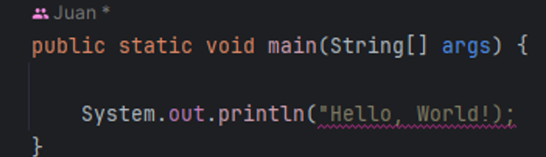
Aqui vai gerar um erro de código, porque faltou fechar as aspas no final de “Hello, Word”.
Regras Semânticas
Imagine que, na sua redação, você escreve "O gato voou para a lua". Gramaticalmente, está certo, mas não faz sentido, isso é um problema semântico.
A regras semânticas dizem se o que você escreveu faz sentido. Mesmo que o código esteja escrito corretamente, ele precisa fazer algo que tenha lógica.
Demonstração do erro:
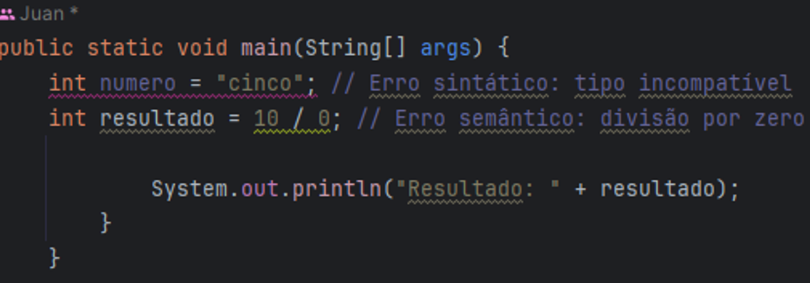
Compiladores e Interpretadores
O compilador gera um arquivo executável que pode ser executado diretamente no sistema operacional. Por outro lado, um interpretador traduz o código fonte linha por linha durante a execução.
O que são variáveis?
Imagine que uma variável é como uma caixa que você usa para guardar alguma coisa. Essa caixa tem um nome (para você saber o que está lá dentro) e você pode colocar diferentes tipos de coisas dentro dela, como números, palavras, ou ate mesmo valores de verdadeiro ou falso
Como funciona?
1 - Declarar uma variável: É como criar a caixa e dar um nome para ela.
2 - Atribuir um valor à variável: É como colocar algo dentro da caixa.
Demonstração:
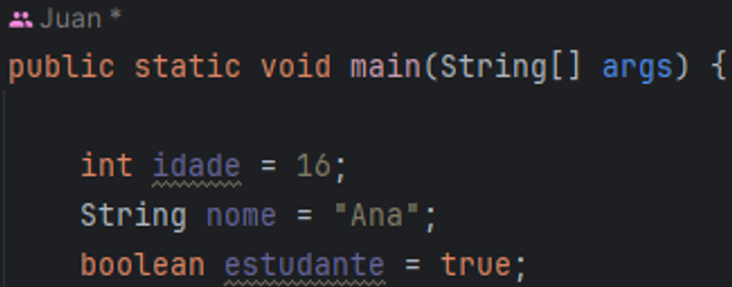
Variaveis Primitivas
Os tipos primitivos são os tipos de dados mais básicos e fundamentais que a linguagem oferece. Eles são usados para armazenar valores simples e não são objetos. Existem 8 tipos primitivos em Java, e cada um serve para armazenar um tipo específico de dado.
Tipos Primitivos em Java
1. byte
2. short
3. int
4. long
5. float
6. double
7. char
8. boolean
Resumo de cada um:
1. Byte: armazenar números pequenos inteiros.
2. Short: Armanezar números inteiros maiores que “Byte”.
3. Int: Armazena números inteiros.
4. Long: Armanezar números inteiros muito grandes.
5. Float: Armazenar números de ponto flutuante (números decimais) com precisão simples.
6. Double: Armazena números com casas decimais.
7. Char: Armazenar um único caractere Unicode (letras, dígitos, símbolos)
8. Boolean: Verdadeiro ou Falso.
Operadores
Operadores são símbolos especiais em programação que realizam operações sobre variáveis e valores. Dá para pensar nele como as operações matemáticas que você já conhece, como adicionar, subtrair, multiplicar e dividir.
Tipos de Operadores
1 - Operadores Aritméticos
2 - Operadores de Atribuição
3 - Operadores de Comparação/p>
4 - Operadores Lógicos
5 - Operadores Unários
Operadores Aritméticos
“+” (adição): Soma dois valores.
“-“(subtração): Subtrai um valor de outro.
“*” (multiplicação): Multiplica dois valores.
“/” (divisão): Divide um valor por outro.
“%” (módulo): Retorna o resto da divisão de dois valores.

Operadores de Atribuição
Esses valores são responsáveis por atribuir valores.
“=” (igual): Atribui um valor a uma variável.
“+=” (mais igual): Adiciona e atribui.
“ -=” (menos igual): Subtrai e atribui.

Operadores de Comparação:
Operadores de Comparação:
“!=” (diferente de): Compara se dois valores são diferentes.
“>” (maior que): Compara se um valor é maior que outro.
“< “ (menor que): Compara se um valor é menor que outro

Operadores Lógicos:
“&&” (E lógico): Verdadeiro se ambas as expressões forem verdadeiras.
“||” (OU lógico): Verdadeiro se pelo menos uma expressão for verdadeira.
“!” (NÃO lógico): Diferente.

delayMicroseconds()
• Função: Pausa a execução do programa por um número específico de microssegundos.
• delayMicroseconds(microseconds);
• microseconds: Tempo de pausa em microssegundos (1 segundo = 1.000.000 microssegundos).

Parse
Conversão do tipo String para valores numéricos
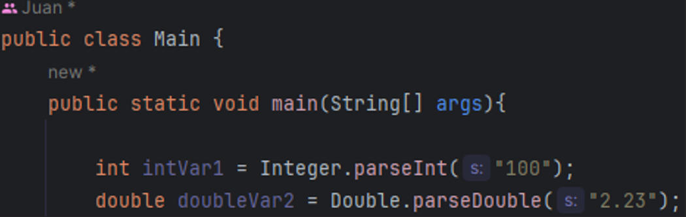
Keyboard Input Java
Keyboard Input é o processo de ler dados digitados pelo usuário no teclado durante a execução de um programa. Em Java, isso geralmente é feito usando a classe Scanner.
Você cria um objeto Scanner, depois lê a entrada do usuário e logo fecha o scanner.
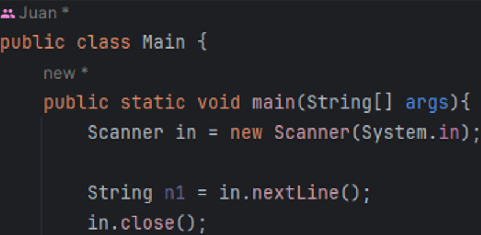
Estrutura de Decisão
Estruturas de decisão são utilizadas para controlar o fluxo de execução de um programa, permitindo que ele tome decisões com base em condições específicas. As principais estruturas de decisão em Java são: if, if-else, if-else if-else, e switch.
1. if
A estrutura if executa o código apenas se uma condição for verdadeira.
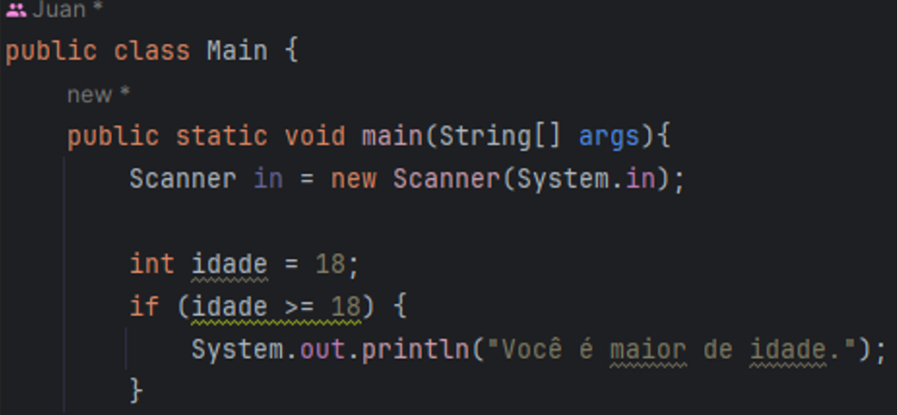
2. if-else
A estrutura if-else executa o código se a condição for verdadeira e outro bloco se a condição for falsa.
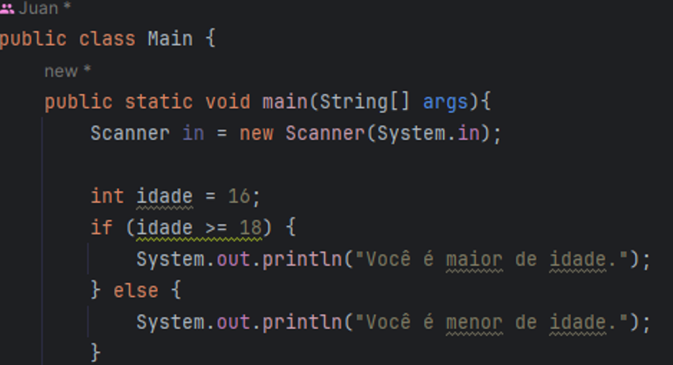
3 - if-else if-else
A estrutura if-else if-else permite verificar múltiplas condições em sequência. O primeiro bloco com uma condição verdadeira é executado.
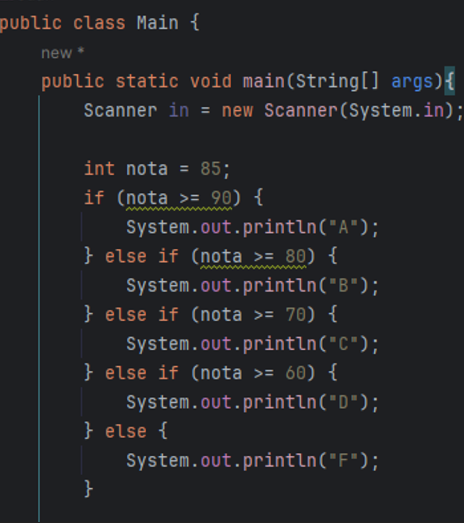
Switch
A estrutura switch é usada para selecionar uma das muitas opções de execução. Cada opção é definida por um caso (case).
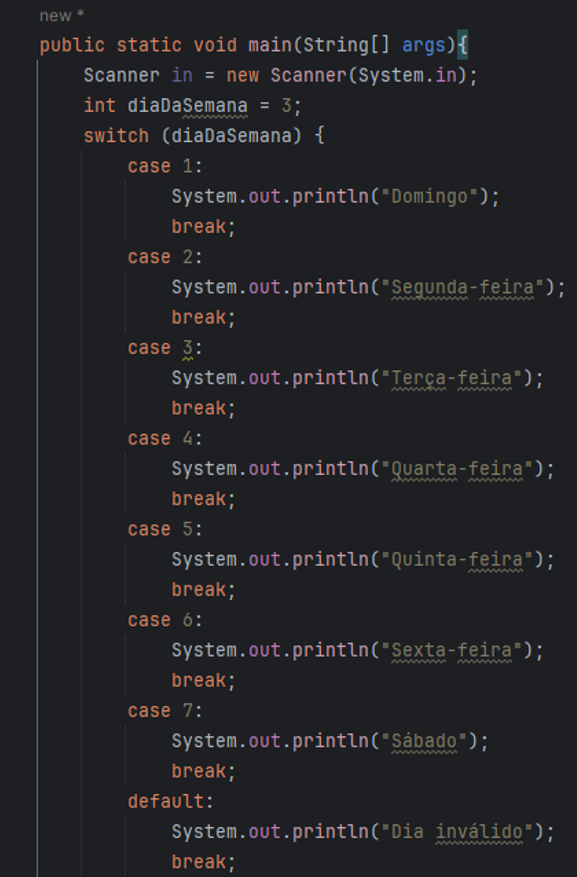
Estruturas de repetição
For: Ele é dividido em três partes: inicialização, condição e incremento/decremento.
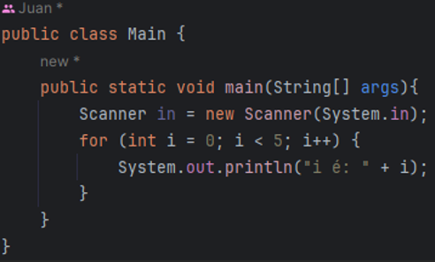
Inicialização: int i = 0 - Define a variável de controle e seu valor inicial.
Condição: i < 5 - A condição que deve ser verdadeira para que o loop continue.
Incremento/Decremento: i++ Atualiza a variável de controle após cada iteração.
While: O loop while é usado quando você não sabe exatamente quantas vezes o bloco de código deve ser repetido, e a repetição depende de uma condição.
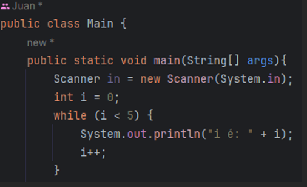
Condição: i < 5 - O loop continua enquanto a condição for verdadeira.
Vetores (Arrays)
Um vetor, que também pode ser chamado de “array”, é uma estrutura de dados que permite armazenar uma coleção de elementos do mesmo tipo. Os elementos são organizados em uma sequência indexada, onde cada elemento possui um índice único.
Vetores:
• Tipo de Dados: Todos os elementos do vetor são do mesmo tipo.
• Tipo de Dados: Todos os elementos do vetor são do mesmo tipo.
• Tamanho Fixo: O tamanho do vetor é definido durante a sua criação e não pode ser alterado posteriormente.
Demonstração:
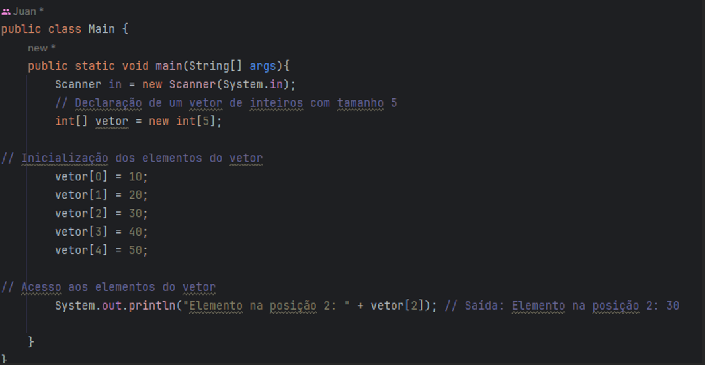
Matrizes
Uma matriz é uma estrutura de dados bidimensional que organiza os elementos em linhas e colunas. Ela é essencialmente um vetor de vetores, onde cada elemento é acessado por meio de um par de índices: um para a linha e outro para a coluna.
Matrizes:
• Bidimensional: Possui linhas e colunas.
• Elementos: Cada elemento é identificado por dois índices: um para a linha e outro para a coluna.
• Tamanho Fixo: O tamanho da matriz é definido durante a sua criação e não pode ser alterado posteriormente.
Demonstração:
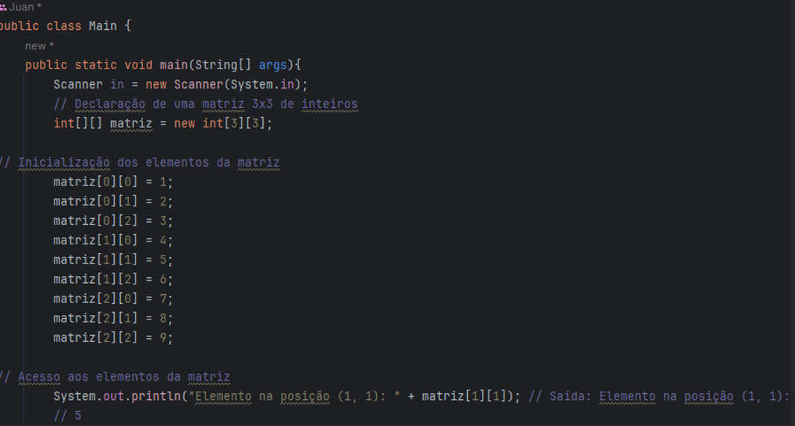
Funções
Em programação, uma função é um bloco de código que realiza uma tarefa específica. Ela é utilizada para dividir o código em partes menores e mais gerenciáveis, facilitando a organização, reutilização e a manutenção do código.
Funções:
• Nome: Identifica a função e é usado para chamá-la.
• Parâmetros: São valores que podem ser passados para a função.
• Retorno: Pode retornar um valor após a execução.
• Reutilização: Pode ser chamada várias vezes em diferentes partes do programa.
Demonstração:
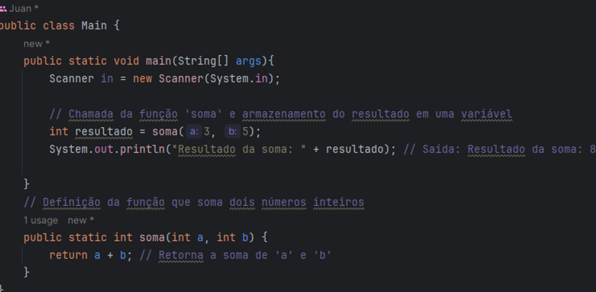
Recursividade
A recursividade é um conceito em programação onde uma função pode chamar a si mesma diretamente ou indiretamente. Isso permite resolver problemas de forma elegante que possuem uma estrutura repetitiva ou de subdivisão em partes menores.
Programação Orientada a Objetos (POO)
O que é Encapsulamento?
O encapsulamento é tipo "esconder" os detalhes internos de um objeto e permitir acesso controlado aos seus atributos e métodos. Significa que os atributos de uma classe são definidos como privados certo, impedindo acesso direto por outras classes. Entretanto, métodos públicos são fornecidos para manipular esses atributos de uma maneira mais segura.
Como Implementar Encapsulamento?
Definir Atributos Privados: Declare os atributos como private para evitar acesso direto externo
Fornecer Métodos Públicos: Forneça métodos públicos (public) para acessar e modificar os atributos privados. Esses métodos são conhecidos como getters (métodos de acesso) e setters (métodos de modificação).
Método Construtor
Um método construtor em programação orientada a objetos é um tipo especial de método usado para inicializar objetos quando são criados. Ele é invocado automaticamente no momento da criação de um objeto e serve para definir o estado inicial do objeto. Vamos explorar os detalhes essenciais sobre os métodos construtores:
Nome do Método: O nome do método construtor deve ser o mesmo que o nome da classe onde está definido.
Inicialização: É usado para inicializar os valores dos atributos de um objeto, geralmente com valores passados como argumentos durante a criação do objeto.
Invocação: É invocado automaticamente quando um objeto é criado usando o operador new.
Construtor Padrão: Se nenhum construtor é explicitamente definido na classe, um construtor padrão (sem argumentos) é fornecido pelo compilador Java.
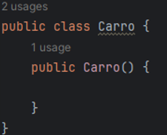
Método toString();
toString() retorna uma representação textual do objeto. A implementação padrão do método toString() retorna uma string que consiste no nome da classe do objeto seguido pelo "@" e o código hash hexadecimal do objeto. No entanto, é comum substituir este método para fornecer uma representação mais informativa e personalizada do objeto.
Diagrama de Classe UML
O Diagrama de Classe UML (Unified Modeling Language) é uma representação visual de classes, seus atributos, métodos e relacionamentos.
Ajuda na modelagem e na visualização da estrutura do sistema antes da implementação.
Componentes: Classes, atributos, métodos, associações, heranças, entre outros.
Classes em Java
Uma classe em Java é um modelo ou plano para criar objetos que têm atributos e métodos específicos.:
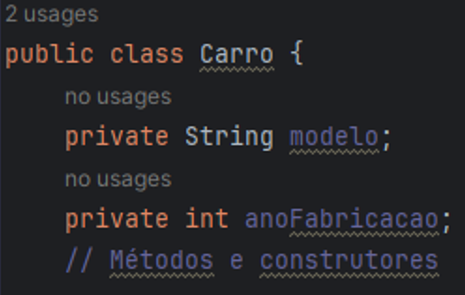
Classes Estáticas
Classes estáticas em Java são classes que não podem ser instanciadas e geralmente contêm métodos ou variáveis que são acessados diretamente pela classe, sem a necessidade de criar um objeto dela.

Sobrecarga de Métodos
Sobrecarga de métodos permite definir vários métodos com o mesmo nome em uma classe, desde que os parâmetros sejam diferentes em número, tipo ou ordem.
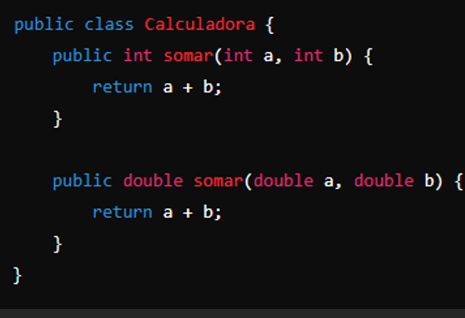
Exceções (Exceptions)
Definição: Exceções em Java são eventos que interrompem o fluxo normal de execução de um programa devido a condições anormais, como erros de runtime ou situações imprevistas.
Tratamento: Pode ser tratada usando blocos try-catch ou propagada para métodos superiores com throws.
Herança
Herança em Java permite que uma classe herde atributos e métodos de outra classe, facilitando a reutilização de código e a criação de hierarquias entre classes.
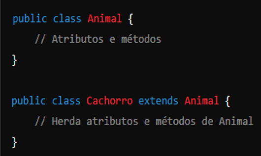
Classes e Métodos Abstratos
Classes abstratas em Java são classes que não podem ser instanciadas diretamente e geralmente contêm métodos abstratos, que são declarados apenas com a assinatura, sem implementação.
Permitem definir um contrato que subclasses devem seguir.
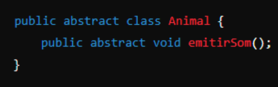
Polimorfismo
Polimorfismo em Java permite que objetos de diferentes classes sejam tratados de maneira uniforme, através de métodos com o mesmo nome que podem ser sobrescritos (sobrescrita de métodos) ou ter diferentes implementações (sobrecarga de métodos).
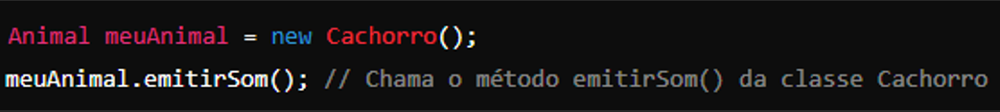